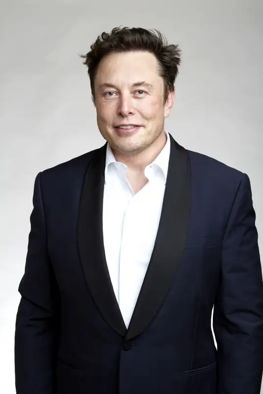

埃隆·里夫·马斯克(Elon Reeve Musk),1971年6月28日出生于南非行政首都比勒陀利亚, 美国, 南非, 加拿大 三重国籍的企业家、工程师、发明家、慈善家， 特斯拉创始人兼首席执行官,SpaceX首席执行官兼首席技术官,SolarCity董事会主席 [1]、Twitter首席执行官,Neuralink创始人、OpenAI联合创始人,美国国家工程院院士,英国皇家学会院士。
宾夕法尼亚大学经济学和物理学双专业,从小就对科学技术十分痴迷,10岁开始学习编程,13岁开发出一款游戏并因此赚到人生第一桶金。1995年至2002年,与合伙人创办Zip2和PayPal [3]。2002年,投资成立SpaceX [10]。2004年,向Tesla公司投资630万美元 [4]。2006年,投资创办光伏发电企业SolarCity [2]。2022年4月,马斯克在获得Twitter 9.2%的股份后加入其董事会，成为其最大单一股东 [57-58]。马斯克以其创新思维和颠覆性业务模式，在汽车、能源、航空航天以及人工智能等领域均取得了诸多成就。
马斯克领导下的SpaceX成功开发了可重复使用的重型发射系统“星际飞船”，并在多次试飞中实现了火箭助推器的成功回收与再利用。这种创新技术不仅大大降低了太空探索的成本，而且为未来的太空殖民和深空探索提供了更加可行的方案。 实现商业太空飞行与空间站对接 SpaceX的龙飞船是全球少数几个能够执行商业太空飞行任务的航天器之一。它不仅成功与国际空间站对接，为宇航员提供补给，而且展示了私人企业在太空运输领域的强大能力。通过与NASA的合作，SpaceX已经签署了数十亿美元的合同，为未来的太空探索提供了稳定的资金支持。 展望火星殖民与深空探索
马斯克的宏大愿景并不仅限于近地轨道的探索。他多次表示希望在火星退休，并计划通过SpaceX实现火星殖民的目标。为此，SpaceX正在积极开发能够支持长期太空旅行和火星殖民的航天器与技术。此外，马斯克还计划利用SpaceX的技术和资源进行深空探索，为人类揭示更多宇宙的奥秘。